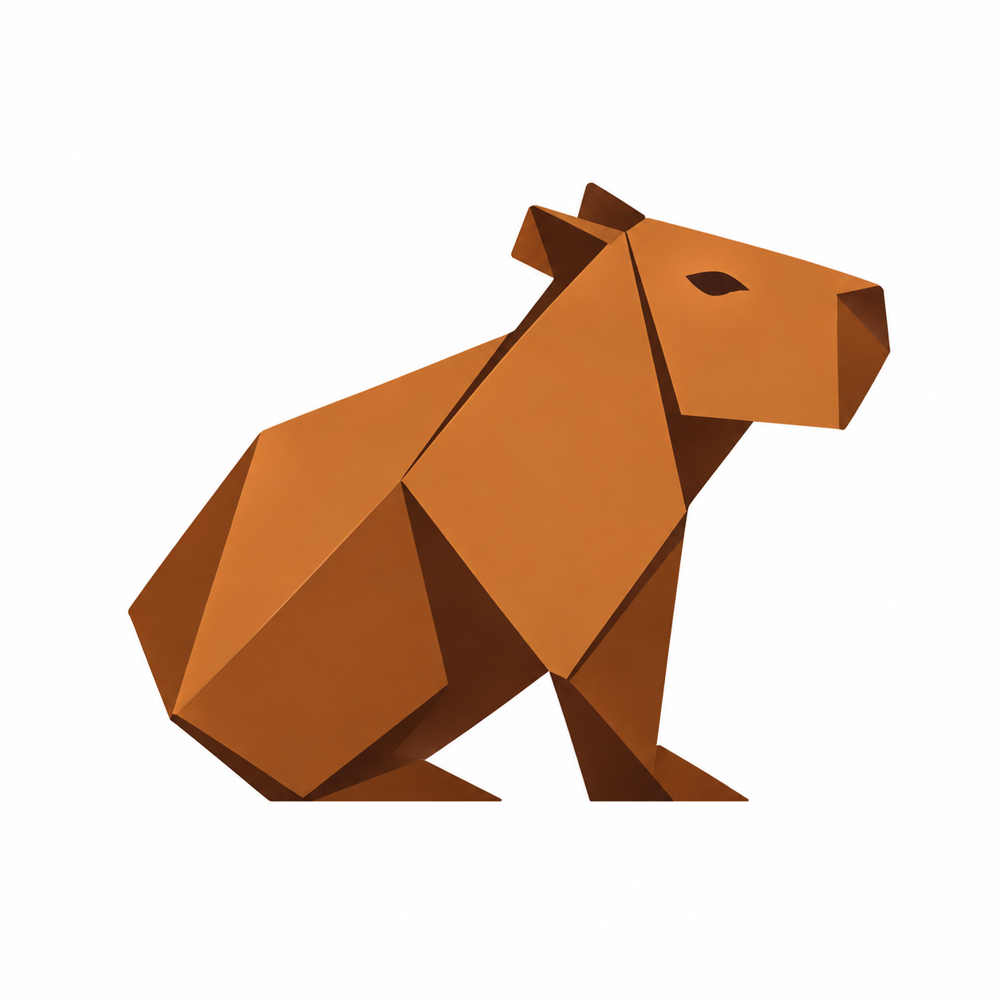
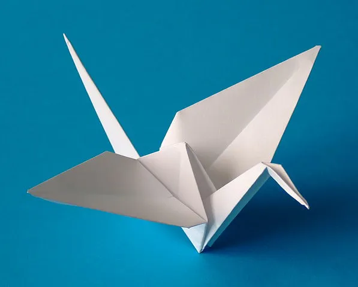
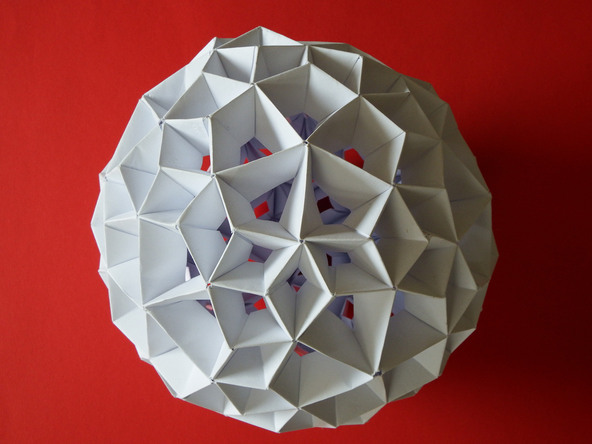
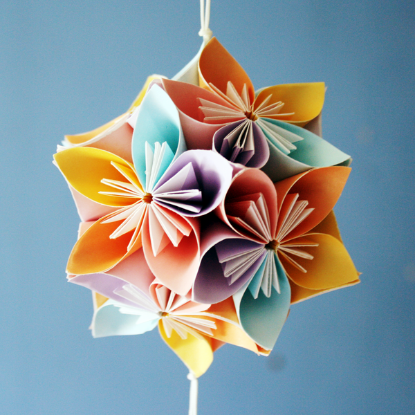
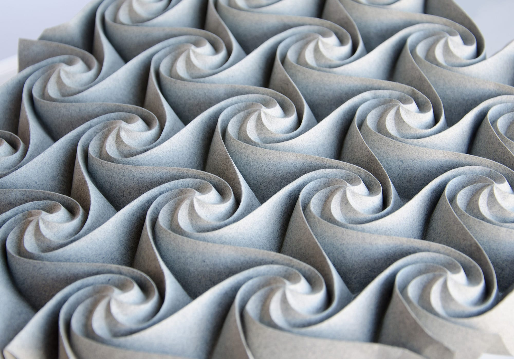
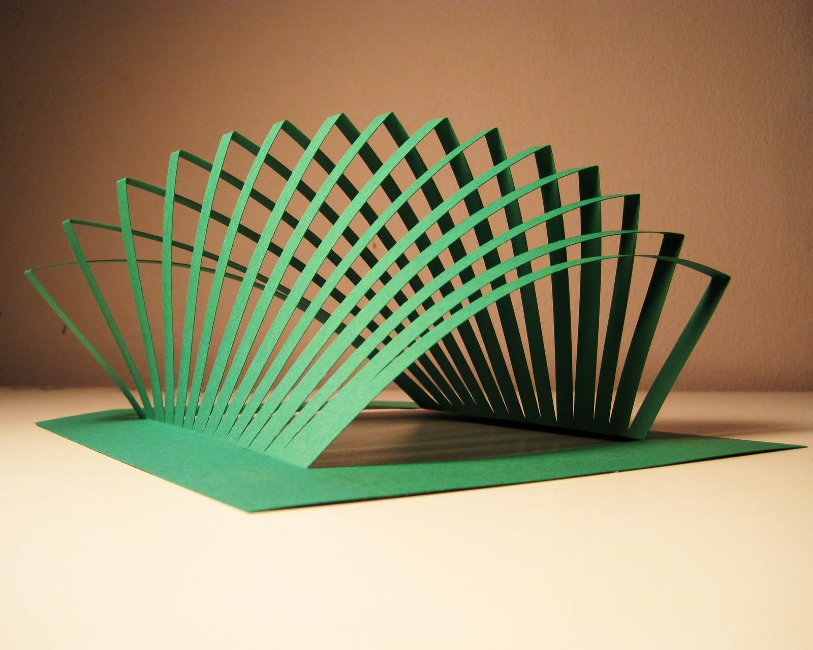
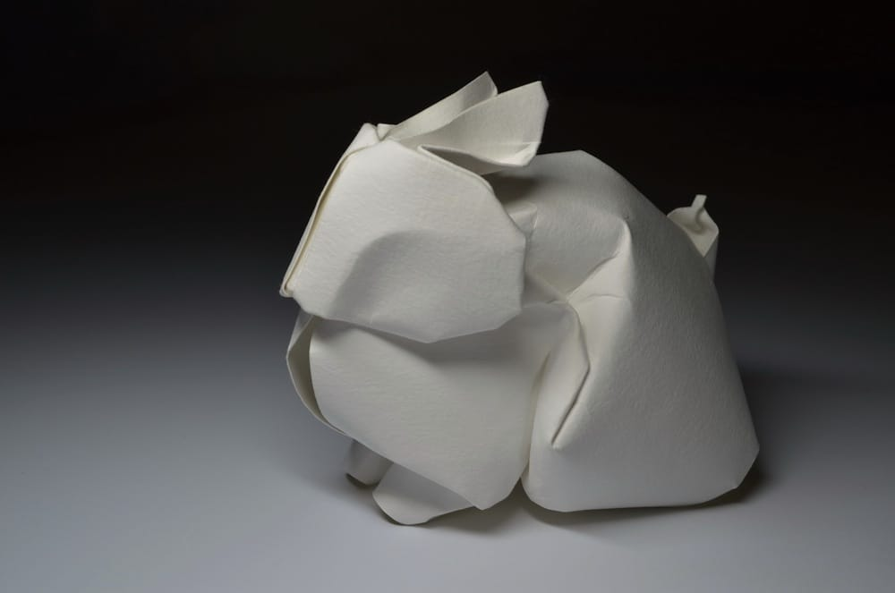

Acredita-se que o origami
tenha surgido pouco depois da invenção do papel. Dessa forma,
sua história remonta à própria origem do material que ele
utiliza como suporte. O papel foi originado na China, por volta de 105 d.C. Assim,
a partir do século VII, os monges budistas chineses teriam levado o papel e as
técnicas de dobradura para outros países do Oriente, entre eles, o Japão.
As primeiras dobras tinham como destino servir de embalagens de medicamentos e ervas.
Além de serem úteis aos rituais religiosos praticados pelos monges xintoístas,
logo, é possível encontrar vestígios deles nos templos atuais em forma de serpentinas de papel
dobradas em ziguezague (O-Sheda e Gohei).
No período Muromachi que abrange o séculos XIV e XV, as famílias Ogasawara e Ise
colocaram várias regras de etiqueta. Assim, a etiqueta de embrulho de papel (dobra cerimonial)
também teve sua importância na época. O método de dobrar o embrulho noshi e as borboletas
femininas e masculinas desde o ano mil, usados até hoje, são resquícios disso.
Em celebrações dos casamentos, as garrafas de saquê têm como tradição ainda
hoje virem lacradas com um papel dobrado em forma de borboleta.
Durante o período Muromachi (1392-1572) foi desenvolvida uma arte de embalagem com
muitos códigos que combinava papel dobrado e cordas de cores diferentes (noshi). Logo,
há três obras que testemunham a tradição japonesa. As duas primeiras surgiram em 1797:
o Senbazuru-origata, que apresentam instruções para dobrar os tsurus acoplados uns aos outros
(de dois a cem), e o Chushingura-origata,
que faz a junção dos diagramas para dobrar as figuras de um jogo japonês.
O terceiro, Kan-no-mado, datado de 1845, é um tipo de enciclopédia feita a mão
com dois volumes que ensinam a dobragem.
No entanto, a palavra “Origami” (de oru : dobrar e kami : papel)
existe desde o período Heian. Em vez de fazer animais e plantas de papel, como fazemos hoje,
usamos o origami como forma de escrita. No período Edo (1603-1868), esse origami passou a ser
usado para avaliações de obras de arte e espadas, e nasceu a palavra “com origami”. Desse modo,
a arte de dobrar papel ganhou o mundo e se difundiu e teve em média 150 modelos criados entre o
final do período Edo (1867) e o período Taisho (1912-1926). A maneira de dobrar o papel é ensinada
às crianças, por muitas gerações que foram sendo passadas de pais para os filhos, que antecedem o
ensino escolar nos jardins de infância, escolas primárias e colégios femininos a partir do início do século XIX.
Alguns modelos em Origami eram referenciados em cerimônias
religiosas (Shinto). Os casamentos eram celebrados
com copos de saquê (vinho tinto) dobrados em papel com borboletas fêmea e macho, representando a noiva e o noivo
para simbolizar a união. Os guerreiros Samurai trocavam, entre si, presentes enfeitados com “noshi”,
pedaços de papel dobrados em leque, de várias formas, seguros com faixas de carne seca.
Os mestres das cerimônias de chá recebiam diplomas com dobras especiais que depois de abertos não
poderiam voltar à forma inicial sem que se pudesse realizar outras dobras no mesmo papel.
A tradição permanece fortalecida ainda hoje quando se utiliza a expressão “Origami Tsuki” que significa
“certificado” ou “garantia”, que funcionam como um selo de qualidade, conferindo autenticidade aos documentos de valor.
Até metade do século XIX, a arte das dobraduras era restrita aos adultos pelo alto custo do papel,
porém, em 1876, o origami passou a ser ensinado nas escolas, fazendo parte da educação dos japoneses.
Quando os japoneses emigraram para o Brasil, trouxeram junto vários costumes que aqui procuraram manter.
Um destes imigrantes, chamado Takao Kamikawa, chegou com a família no ano IX da era Showa para trabalhar nos cafezais.
Conforme relatos históricos, ele costumava aos domingos juntar as crianças na Fazenda
Barracão na cidade de Bauru e com folhas de jornais antigos, ele cortava os quadrados para animar as crianças com
figuras como damashibune, hakama, tsuru, etc. Takao Kamikawa usava um livro japonês chamado “Konreikagami” de
Matsuaki Futaba, da editora Dainipon Reisetsu Gakuin Shupan-bu acerca de todo o cerimonial religioso do casamento,
onde aparece o modo de dobrar algumas figuras como noshi e outros ornamentos feitos de papel que eram usados na cerimônia.
Aqui no Brasil, o origami também recebe outro nome, dobradura, cuja arte mais comum das crianças é o barco e o avião.
Como toda dobradura, os origamis têm muitos significados especiais. No Japão o sapo (kaeru) representa o amor e a fertilidade.
A figura do sapo tem uma correlação com o retorno, expressando o desejo de que as coisas boas voltem.
E se desejamos que as coisas boas se repitam em nossas vidas, confeccionar um sapo de origami e carregá-lo como amuleto
é acreditar que algo de bom está prestes a se realizar em breve, como a volta do dinheiro gasto ou a volta da saúde
para uma pessoa que está doente.
Atartaruga é tida como símbolo da longevidade, dada a sua vida longa.
Um mito oriental diz que se o tsuru, a ave da felicidade, vive mil anos, a tartaruga muito mais que isso,
pois todas as criaturas que vivem bastante logram um estágio de sabedoria e experiência muito além do comum
dos outros seres vivos. A tartaruga expressa o desejo de vida longa para quem a recebe.
O tsuru (ave-símbolo do origami), também conhecido como grou ou cegonha, significa boa sorte,
felicidade e saúde. Os tsurus (grou) são aves grandes, de cores contrastantes, plumagem clara,
chegando ao branco, com extremos de fascinante degradê vermelho, e dotado de inigualável encanto.
Uma deslumbrante beleza que tem sua consagração pelos japoneses como a ave que representa a vitalidade da juventude.
Algo que deve ser considerado, é que no origami tradicional o papel é sempre quadrado, sem corte ou cola e todo o
simbolismo por trás é muito especial para o povo japonês, pois o próprio significado do origami pode transformar uma vida.
Da semente à primeira floração, da árvore adulta a transformação em papel até que por fim, temos o nascimento do origami.
Se isso acontece, é porque o origami faz parte desse ciclo de mudanças.
A comemoração do origami no Japão é em 11 de novembro e nesta data o tsuru foi oficialmente reconhecido como
símbolo da Paz. Um dia para relembrar o fim da primeira Guerra Mundial. Enquanto no Brasil e em outros países
comemora-se de 24 de outubro à 11 de novembro. Nesse período acontecem eventos comemorativos e atividades ao redor do globo.





